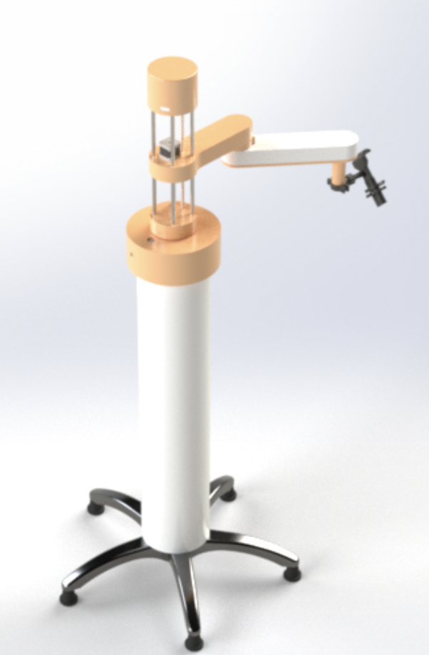

MILO: Voice-Controlled Robotic Arm
MILO is a modular robotic assistant designed to support patients with limited mobility in hospital and rehabilitation settings, while reducing nurse workload. Nurses mount mobile devices or tablets to the arm, and patients can utilize voice commands to adjust its position as needed. MILO can also dynamically adjust its alignment as patients shift to keep their devices aligned with their line-of-sight.
Project Goals
- Enable hands-free control of a robotic arm using voice recognition.
- Provide precise and safe assistance near a patient’s face or torso.
- Design a low-cost, adaptable platform for various bedside configurations.
Design Highlights
- MediaPipe-based face tracking for dynamic positioning.
- Real-time speech recognition neural network with keyword detection for voice commands.
- Custom SCARA arm with safety constraints and feedback control.
- ROS integration with real-time speech and ToF distance input.